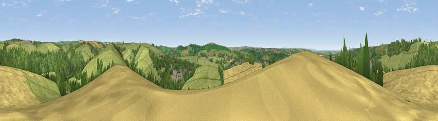

Viewpoint near Barnstaple
#11853 in England · top 25% of its area beats it · near BarnstapleThe view, rendered

A 360° render of this exact spot computed from the terrain model, tree cover and land cover — summer colours, afternoon light, calibrated against photographs of famous viewpoints. Real trees, hedges and buildings will differ in detail.
The panorama
Grey silhouette: terrain skyline in each direction (720 bearings, Earth curvature and refraction included). Dashed green: skyline with trees (+15 m) and buildings (+8 m) as obstacles. Blue strip: how far the ground is visible on each bearing.
Where the view opens
Wedge length = distance to the farthest visible ground on that bearing (vegetation-aware). Rings at 10, 25 and 50 km.
What fills the view
52% grassland · 23% cropland · 21% woodland · 3% built-up
Angular shares of the visible panorama (visual magnitude), not map area. Landscape diversity 0.50 (0–1 Shannon).
Key numbers
More beautiful places nearby
The staircase of upgrades: each row has a higher view potential than everything closer. Driving times are estimates from straight-line distance, calibrated against real road routing — check an actual route before setting out.
| Place | Direction | Drive | Score |
|---|---|---|---|
| Viewpoint near Landkey | ESE · 2 km | ~5 min | 61.1 |
| Viewpoint near Goodleigh | ESE · 2 km | ~6 min | 68.3 |
| Viewpoint near Landkey | ESE · 2 km | ~6 min | 69.5 |
| Viewpoint near Kings Heanton | NW · 4 km | ~9 min | 71.1 |
| Viewpoint near Bishop's Tawton | S · 4 km | ~9 min | 73.8 |
| Codden Hill | S · 4 km | ~10 min | 81.3 |
| Viewpoint near Berrynarbor | N · 13 km | ~24 min | 81.8 |
| Viewpoint near Croyde | WNW · 14 km | ~25 min | 83.7 |
51.08472, -4.03127 · source: screening · position refined by local search. Computed location — check access rights before visiting.